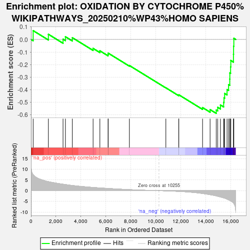

| | | Dataset | CD_deg |
| Phenotype | NoPhenotypeAvailable |
| Upregulated in class | na_neg |
| GeneSet | OXIDATION BY CYTOCHROME P450%WIKIPATHWAYS_20250210%WP43%HOMO SAPIENS |
| Enrichment Score (ES) | -0.5873148 |
| Normalized Enrichment Score (NES) | -1.9507233 |
| Nominal p-value | 0.0036231885 |
| FDR q-value | 0.031354137 |
| FWER p-Value | 0.551 |
Table: GSEA Results Summary

Fig 1: Enrichment plot: OXIDATION BY CYTOCHROME P450%WIKIPATHWAYS_20250210%WP43%HOMO SAPIENS
Profile of the Running ES Score & Positions of GeneSet Members on the Rank Ordered List
Fig 2: OXIDATION BY CYTOCHROME P450%WIKIPATHWAYS_20250210%WP43%HOMO SAPIENS: Random ES distribution
Gene set null distribution of ES for OXIDATION BY CYTOCHROME P450%WIKIPATHWAYS_20250210%WP43%HOMO SAPIENS